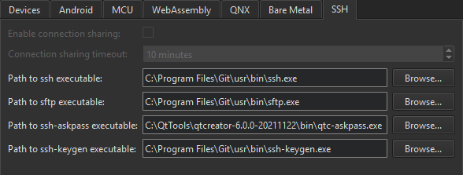

Configure SSH connections
To protect the connections between Qt Creator and a device, install the OpenSSH suite, which includes the ssh, sftp, and ssh-keygen tools on the computer.
SSH connections are established via an OpenSSH client running in master mode, if possible. By default, multiple sessions are shared over a single SSH onnection. Establishing a connection once and then re-using it for subsequent run and deploy procedures reduces connection setup overhead particularly with embedded devices. Because connection sharing is not supported on Windows, a new SSH connection is created for each deploy or run procedure.
To set the paths to the directories where the tools are installed:
- Go to Preferences > Devices > SSH.

- Clear Enable connection sharing to create a new SSH connection for each deploy and run procedure. This option is grayed on Windows, where connection sharing is not supported.
- In Connection sharing timeout, specify the timeout for reusing the SSH connection in minutes.
- In Path to ssh executable, enter the path to the directory where the OpenSSH executable is installed.
- In Path to sftp executable, enter the path to the directory where the SFTP executable is installed.
- In Path to ssh-askpass executable, enter the path to the directory where the ssh-askpass executable is installed. Usually, you can use the default path that points to the implementation of the tool delivered with Qt Creator, qtc-askpass.
- In Path to ssh-keygen executable, enter the path to the directory where the ssh-keygen executable is installed.
See also How To: Develop for remote Linux and Developing for Remote Linux Devices.